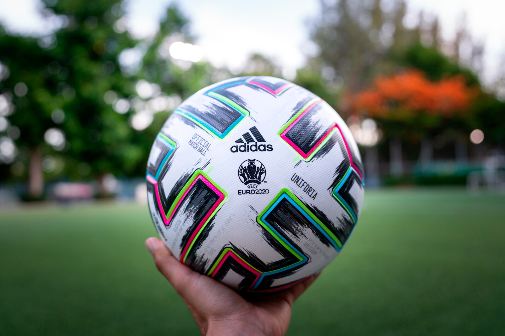

De sport die ik beoefen is voetbal. Ik speel bij de foresters in Heiloo. Wij hebben 1 Oktober onze laatste beker wedstijd gespeeld. Wij spelen in de 3e klasse. De beker competitie hebben we niet best gespeeld. We zijn uiteindelijk op de 4e plaats geeindigd van de 6. Alleen de laatste wedstrijd heb ik in het eerste halfuur mijn teen gebroken dus voorlopig zit ik op de bank. Mijn positie is keeper.

Voetbal